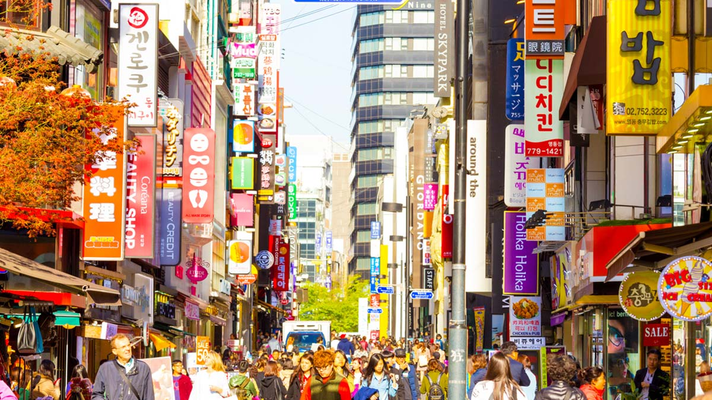
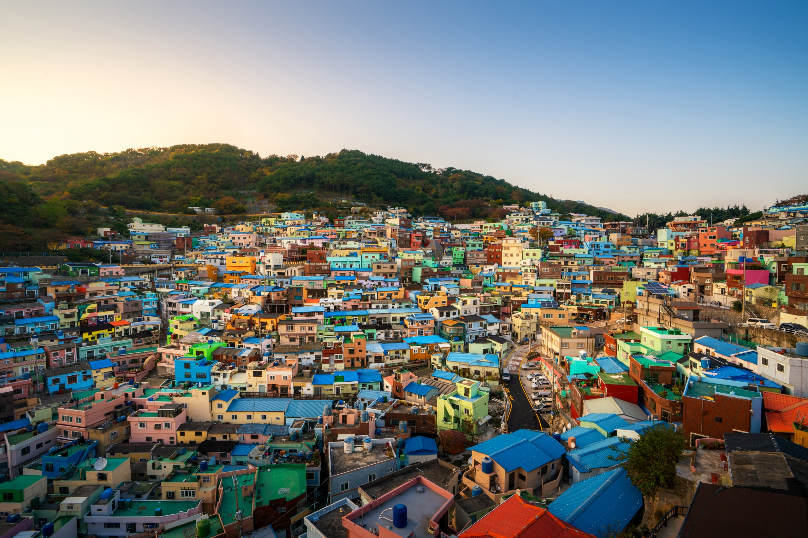
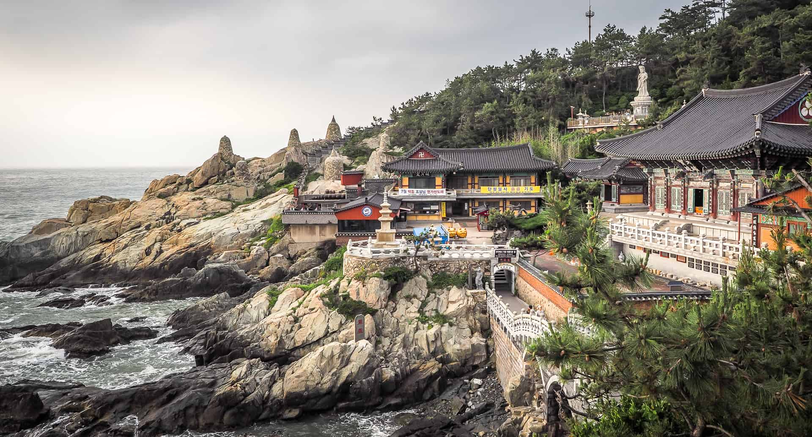
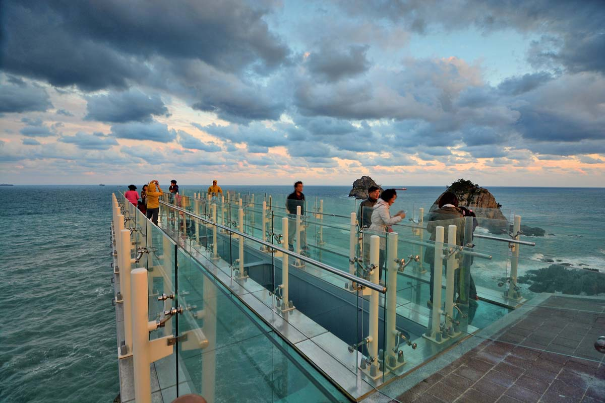
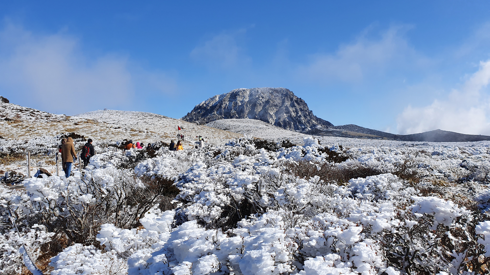
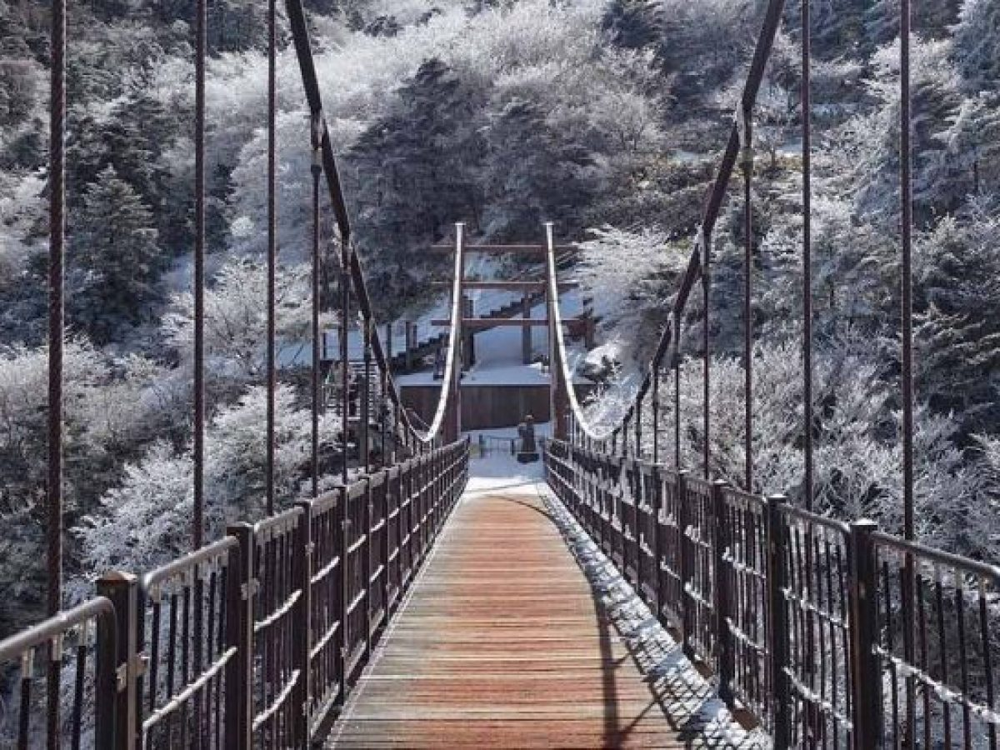
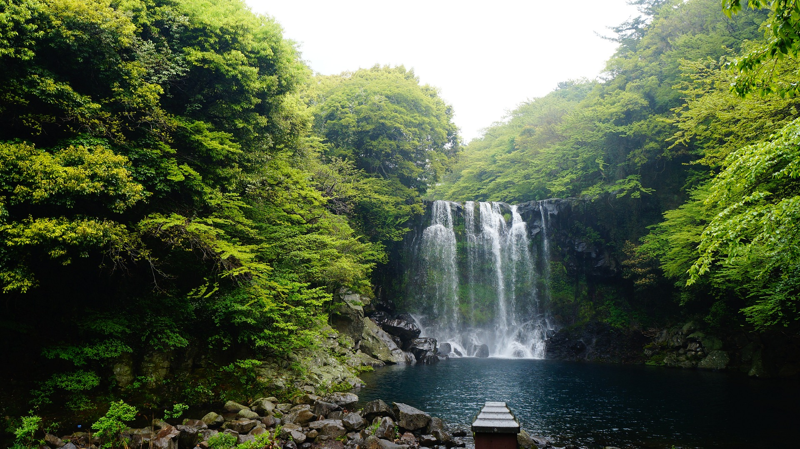
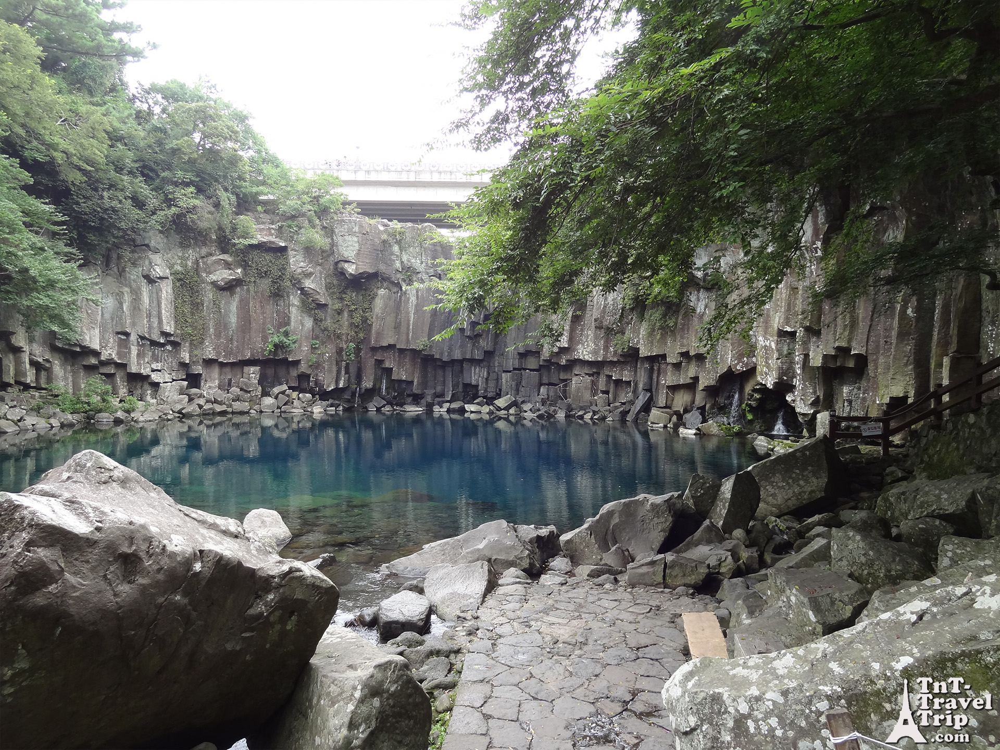
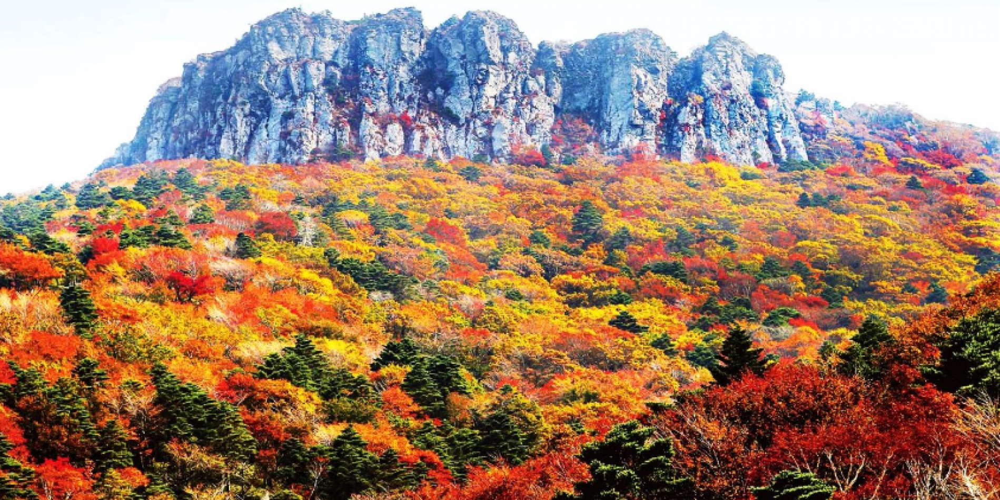
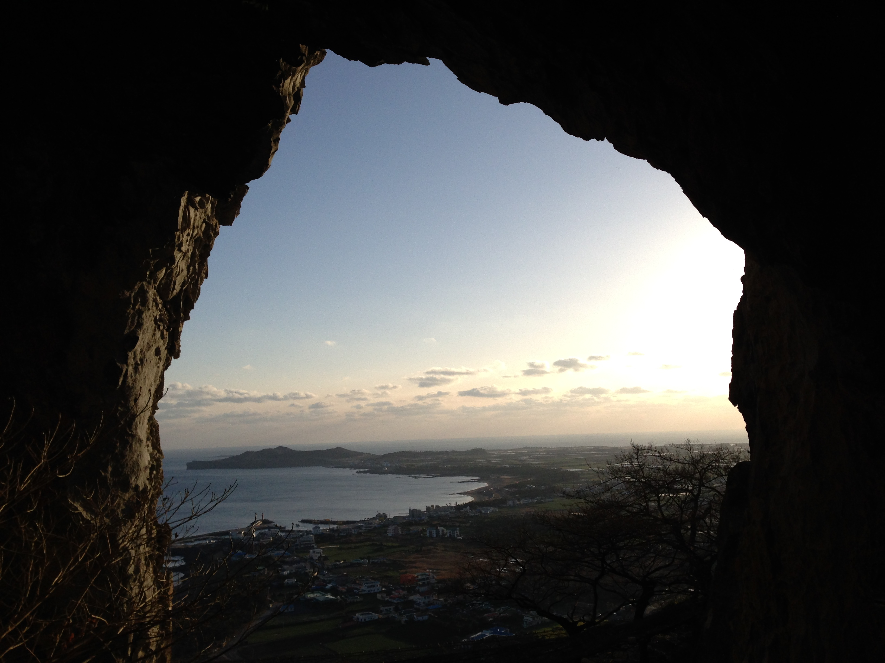

Voyagez en Corée
Vous rêvez d’explorer la Corée et ses trésors cachés? Vous recherchez l’expérience, l’authenticité et les
rencontres locales?
Venez découvrir les sites classés au patrimoine mondial de l’Unesco à commencer par
Gyeongju, véritable berceau culturel du pays, mais aussi Andong, ancienne capitale ancestrale et Hahoe, petit
village rustique au charme sans égal. Vous vivrez une expérience unique en séjournant dans un temple bouddhiste
entourés de moines bienveillants. Vous verrez également Busan, grande ville portuaire aux plages étendues et à
l’atmosphère chaleureuse du Sud, et enfin Jeonju, le vrai reflet de l’identité coréenne. Initiez-vous à l’histoire
d’une culture encore méconnue, d’un pays aux mœurs singulières, et d’une population aussi chaleureuse que désireuse
de partager ses valeurs avec ses visiteurs du monde entier.
La péninsule de Corée se trouve à l'est de l'Asie.
Un voyage en Corée du Sud vous permettra de plonger au cœur des traditions et de profiter des
beautés et paysages uniques de Corée. Vous découvrirez un mélange de culture traditionnelle et
moderne, mêlant mer et montagnes, villes et campagnes, tout en profitant du cadre doux et zen
des temples bouddhistes coréens : une véritable découverte ! Ici vous pouvez découvrir un
ititnéraire typique pour une visite globale de la Corée.
Séoul :
Visite du quartier Myeondeong. Quartier haut en couleurs et qui ne dort jamais.

Gyeongju 경주시 : en route vers la capitale du royaume de Silla !
Située dans la région de Gyeongsangbuk-do 경상북도, Gyeongju fut la capitale du royaume
de Silla et l’une des plus anciennes villes historiques au monde. C’est un lieu unique par
son patrimoine culturel et par l’originalité du site. Un haut lieu de la culture et du
patrimoine de la Corée. Par ailleurs, ce site a été classé par l’UNESCO.
Arrivée à Gyeongju, n’oubliez pas de visiter une hanok, une maison typique coréenne. Ce que
vous pouvez retrouver dans les alentours de Gyeongju : Parc des tumulis et les tombes
royales de Daereungwon, Observatoire de Cheongseongdae, ancienne forteresse, ancien jardin
royal Anapji.
Le temple Bulguksa et la grotte Seokguram, qui se trouvent aussi tout près, et qui sont deux
sites exceptionnels du patrimoine coréen. Vous pourrez faire une belle balade entre le temple
et la grotte.

Busan 부산 : C’est parti pour le sud !
Deuxième ville de Corée et 1er port du pays, Busan est également considérée comme une ville
dynamique où se côtoient grands magasins, restaurants de luxe, parcs et plages magnifiques.
En prenant le train vous pourrez longer le littoral coréen entre Gyeongju et Busan,
simplement magnifique.
En arrivant Vous pourrez visiter l’immense marché aux poissons où vous pourrez déguster du
poisson cru et frais. A voir aussi : le centre-ville avec la tour de Busan, la rue du Busan
Film Festival et le quartier artistique Gamcheon.

Temple en bord de mer
Prenez la Direction du temple Yonggungsa 해동용궁사, unique par sa construction sur le flanc d’une
falaise au bord de la mer, le matin.
L’après-midi, allez-vous promener sur la plage Haeundae et la presqu’île Dongbaek, balade charmante!
Vous pourrez également vous arrêter un moment à l’aquarium de Busan.

A l’assaut des hauteurs
Partez à l’assaut de la montagne et du joli temple perché Beomeosa, où vous pourrez également faire une
belle randonnée si vous le souhaitez. Ou bien rejoignez le bord de mer et le skywalk de Busan, qui vous
fera marcher au-dessus des vagues pour une vue à couper le souffle.
Balade au parc Igidae à flanc de falaise, pause dans la rue des cafés du quartier étudiant et enfin,
le téléphérique de Songdo pour une vue magique sur les paysages côtiers.

Jeju : Découverte de l’île des amoureux
Jeju-do est l’ile romantique, l’île des amoureux pour les coréens. C’est une destination phare pour
les jeunes mariés. Elle est aussi connue aussi pour ses paysages qui ont inspirés de nombreux
cinéastes coréens.
L’île est aussi réputée pour la randonnée en hiver comme en été. Au printemps vous profiterez de
la beauté de l’île grâce à ses fleurs.
Aller voir les magnifiques chutes Cheonjiyeon, vous pourrez prendre le petit sous-marin pour observer
la faune et la flore marine, et vous balader au marché de Seogwipo.


Les merveilles de l’île
Commencez la journée avec une petite baignade sur la très belle plage Jungmun, où vous pourrez
croiser des Haenyos : les plongeuses de Jeju, inscrites à l’UNESCO.
Partez ensuite à la conquête des nymphes qui peuplent les chutes Cheonjeyeon et le bassin d’eau
turquoise à quelques pas de là. Vous passerez ensuite par les falaises constituées de lave
Jusangjeolli et finissez la journée par le majestueux temple Yakcheonsa.



Entre Volcans et traditions
Nous vous recommendons de partir à l’assaut de la montagne Sanbangsan: ancien volcan secondaire
de l’île, elle détient encore plusieurs jolis secrets.
Vous pourrez ainsi découvrir une grotte creusée à même la roche pour honorer Bouddha, d’où vous
aurez une vue imprenable sur la mer. Plus bas se trouve également un petit temple, le canyon de
mer Yongmeori et le bateau-musée d’Hendrick Hamel : premier occidental à avoir mis les pieds en Corée.


Et encore plus à voir ...